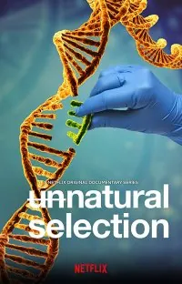

The genetics
Genetics is the whole subject of this documentary series, which presents real, current genetic technologies rather than fiction. It covers gene editing with CRISPR, gene therapy for inherited diseases, gene drives designed to spread a modification through an entire wild population, mitochondrial replacement to produce "three-parent" babies, and do-it-yourself experiments by biohackers outside institutions. Scientists are shown in many roles: academic researchers, companies selling very expensive treatments, campaigners, and amateurs who inject themselves with untested products; the series also covers resistance to gene drives, partly because some of the research is funded by the military. Reviewers found it engaging but noted that it does not explain the science in depth. A review republished by the Center for Genetics and Society criticised it for offering scant pushback on hyperbolic narratives and for not exploring the doubts that call the whole project of gene editing into question. It is a useful snapshot of the field and its ethical debates around 2019.
The story
This four-part Netflix documentary series explores genetic engineering, especially the gene-editing technology CRISPR, through the stories of scientists, companies, patients and biohackers. It opens with Jennifer Doudna, one of the scientists behind CRISPR gene editing. The first episode, "Cut, Paste, Life", follows the parents of a boy who will go blind because of an inherited condition and introduces the biohacker Josiah Zayner, who experiments on himself. "The First to Try" follows a patient with spinal muscular atrophy receiving an expensive gene therapy; the series also features the company Spark Therapeutics and its gene therapy for an inherited form of blindness. "Changing an Entire Species" deals with gene drives, proposed to eliminate malaria-carrying mosquitoes and invasive rats in New Zealand, and the scientist Kevin Esvelt's search for communities willing to host experiments. "Our Next Generation" looks at the results of gene therapy for blindness, "three-parent" embryos created in a Ukrainian clinic, and the debate over designer babies.